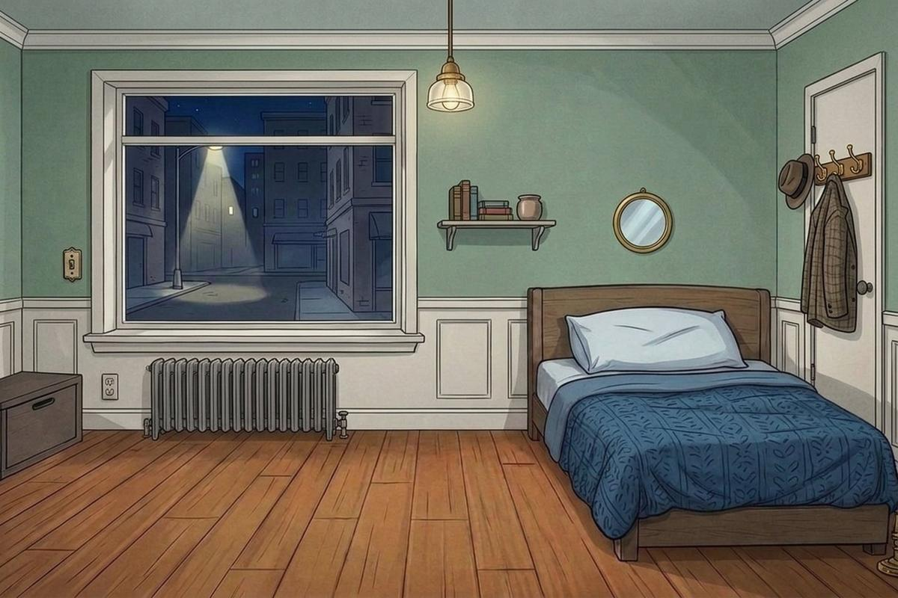
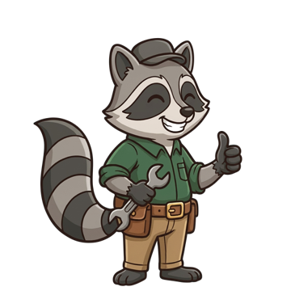

Experiment No. 1
We read the paper, then put it on a stage.
The Butcher Shop takes a dense research paper and turns it into a short interactive film that anyone can follow, with every number checked against the page it came from.


How it stays accurate
Fun is the easy part. The checking is the work.
- Every number
- Each figure on screen is tied to a page of the PDF. The build reads the PDF and stops if a number and its page do not match.
- The paper's caveats
- Where the authors qualify a claim, the film keeps the qualifier next to the number. We add no critique of our own.
- The authors' credit
- Authors are named, the paper is linked from every screen, and none of its figures are copied.
- The format
- Ten scenes with a small cast, six moments where the viewer takes a turn, and one screen for people who want the detail.
Where else it fits
The method does not care that the first one was a health paper.
- a research paper
- a technical report
- a product spec
- a policy or standard
This is the first one we have made. The process behind it is written down and repeatable: a fact sheet from the source first, a design second, the build and its checks last.